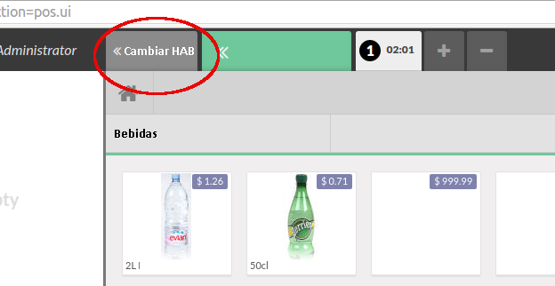

<section class="oe_container">
    <div class="oe_row oe_spaced">
        <h2 class="oe_slogan">Cambiar de Habitación</h2>
        <h3 class="oe_slogan"></h3>
        <div>
            <p class='oe_mt32'>
                Este módulo permite cambiar de habitación utilizando el botón "Cambiar HAB" manteniendo un histórico y notas indicando las horas de los cambios.
                
           </p><p>
           </p>
        </div>
        <div class="oe_row_img oe_centered oe_mt32">
            <div class= oe_picture oe_screenshot">
                    
            </div>
        </div>
    </div>
</section>
